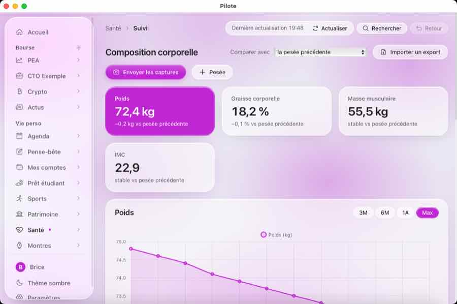

Pilote pour la santé
Votre poids et vos mesures, sans les confier à personne.
Quatorze mesures de composition corporelle, lues depuis l'application de votre balance ou saisies à la main, avec leurs courbes et vos objectifs. Des données de santé qui ne quittent pas votre ordinateur.


Ce que Pilote suit
Quatorze mesures
Poids, IMC, graisse corporelle, masse musculaire, eau, masse osseuse, graisse viscérale, métabolisme, âge corporel et d'autres. Vous gardez celles que votre balance donne.
Depuis l'application de votre balance
Envoyez les captures d'écran de l'application de votre balance (FitDays par exemple) : Pilote les lit sur votre ordinateur et pré-remplit la pesée. Rien n'est enregistré sans votre validation.
Courbes et comparaisons
Chaque mesure comparée à la pesée précédente, et sa courbe sur trois mois, six mois, un an ou depuis le début.
Objectifs
Un poids ou une mesure à atteindre, et le chemin qu'il reste à faire.
Vos données de santé restent chez vous
Lues sur votre ordinateur
La lecture des captures se fait avec le moteur de votre système (Windows ou macOS) : aucune image n'est envoyée à un service en ligne.
Un profil par personne
Plusieurs personnes peuvent partager l'ordinateur, chacune avec ses mesures et, si elle le veut, son code PIN.
Essayer Pilote
Gratuit, sans compte et sans publicité. Vous ne cochez que les parties qui vous servent.

Pilote suit aussi
Bourse
PEA, comptes-titres et crypto : positions, dividendes, frais, composition des ETF.
Pilote pour la bourseBudget
Dépenses du mois par catégorie, relevés de banque importés, patrimoine.
Pilote pour le budgetSport
Séances, objectifs, statistiques, blessures et lecture des montres.
Pilote pour le sport